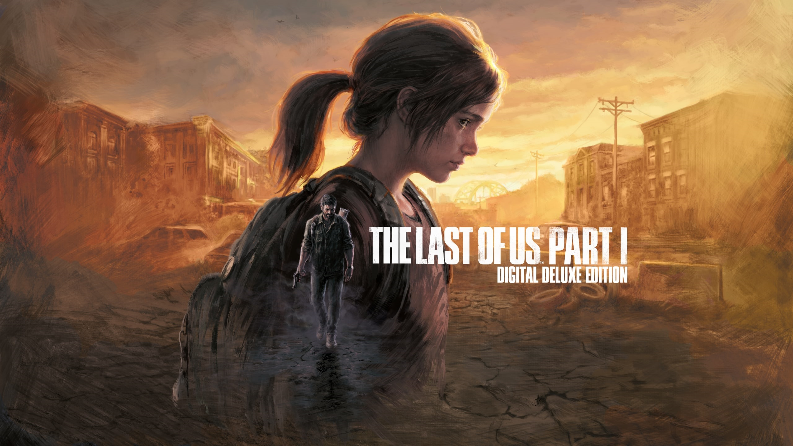

Características del videojuego
- Gran jugabilidad
- Excelentes personajes
- Historia sorprendente
Sinopsis
The Last of Us Parte I es un videojuego de genero Drama, Survival Horror y Acción-Aventura en tercera persona desarrollado por Naughty Dog y PlayStation Studios y publicado por Sony Interactive Entertainment. Una nueva versión del videojuego de 2013, The Last of Us junto a su expansión independiente Left Behind, se lanzó el 2 de septiembre de 2022 para PlayStation 5 y el 28 de marzo de 2023 para PC.

Historia
Personajes
Jugabilidad
Formulario